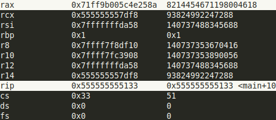
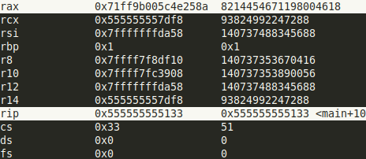

Notions x86_64#
Notes importantes#
movabsest unmovqui ne peut utiliser que des immédiats et des registers (pas d'adresse mémoire), par contre il peut utiliser des immédiats de 64 bits.movsb/movsw/movsd/movsqpermet de copier une donnée d'une taille donnée (b:1 octet, w: 2 octets, d: 4 octets, q: 8 octets) depuis l'adresse spécifiée par le registre rdi vers l'adresse spécifiée par le registre rsi.
Registres en x86_64#
Il existe plusieurs types de registres dans l’architecture x86_64:
General Purpose Registers
The pointer register
Flag Register
Control Registers
Debug Registers
Model-Specific Register
XMM Registers
Float registers (en pratique XMM registers les ont remplacés)
On va principalement parler des deux premieres familles de registres.
General Purpose Registers#
En x86_64 les registres généralistes ont une taille maximale de 64-bits (8 octets). Il existe 16 registres dans cette famille, dont certain ont une utilisation spécifique.
Les registres sont :
rax, rbx, rcx, rdx: version 64-bits des registres: A, B, C, D.
rbp, rsp: version 64-bits des registres de gestion de la pile: BP(base pointer) et SP (stack pointer).
rsi, rdi: version 64-bits des registres pour la copie de données: SI(source index) et DI(destination index).
r8,r9,r10,r11,r12,r13,r14,r15: registres 64-bits introduit avec l’architecture x86_64 (inexistant en architecture x86 (32-bits)).
Les registres hérités de l’architecture x86 (A,B,C,D) peuvent être accédés de différentes manières, on peut faire en sorte d’accéder que certains octets des registres.
Comme le montrent les figures et code suivants, chaque nom permet de spécifier les octets à lire ou à écrire (sachez qu’il y existe une différence de comportement pour les versions 32-bits et 64-bits, même si à premiere vue elles paraissent equivalentes):
; source:
.global main
main:
movabsq $0x71ff9b005c4e258a, %rax
movl %eax, %ebx
movb $0x41, %ah
movb $0x41, %al
movw $0x51, %ax
movl $0x41, %eax
movq $0x51, %rax
movw %ax, %bx
ret
; compilé (objdump):
;main:
; 1129: 48 b8 8a 25 4e 5c 00 movabs $0x71ff9b005c4e258a,%rax
; 1130: 9b ff 71
; 1133: 89 c3 mov %eax,%ebx
; 1135: b4 41 mov $0x41,%ah
; 1137: b0 41 mov $0x41,%al
; 1139: 66 b8 51 00 mov $0x51,%ax
; 113d: b8 41 00 00 00 mov $0x41,%eax
; 1142: 48 c7 c0 51 00 00 00 mov $0x51,%rax
; 1149: 66 89 c3 mov %ax,%bx
; 114c: c3 ret
Les autres registres hérités (SI,DI,SP,BP) ne permettent pas d’accéder leur deuxième octet.

On remarque que les deux instructions
movl $0x41, %eaxetmovq $0x51, %raxse comportent exactement de la même maniére dans ce cas de figure, tout en ayant des tailles différentes: la version avec%eaxutilisant 2 octets de moins.Pour des raisons de performances de calculs en 32-bits (comme expliqué ici) amd a fait en sorte de forcer les 32-bits de poids fort à zéro.
Retenez juste que les instructions 32-bits forcent les 32-bits de poids fort à zéro.
Références:
Pointer Register (RIP)#
Le pointer register contient l”adresse mémoire ou la prochaine instruction à exécuter est située. Comme vous pouvez le voir dans les captures suivantes, quand le CPU fini d’exécuter l’instruction
movabsqui est à l’adresse0x5129la valeur de%ripest l’adresse de l’instruction suivantemov %eax, %ebxà l’adresse0x5133.
 

Il faut que vous sachiez que les instructions ont des tailles différentes. elles varient de
1 octetsjusqu’à15 octets. Vu qu’en mémoire les données sont stockés par octets, durant la lecture d’un octet de l’instruction le CPU sait s’il doit interpréter les prochains octets comme faisant partie de cette même instruction grâce aux octets qu’il a déja décodés.Les instructions d’appel et de branchement
jmp,call,ret, … ne font que modifier la valeur de ce fameux registre%rip, en d’autres termes elles changent l’adresse de la prochaine instruction.
Résumé sur les registres#
| 64-bits | 32-bits | 16-bits | 8-bits | Utilisation dans l'ABI Linux AMD64 | Appel de fonction |
|---|---|---|---|---|---|
| rax | eax | ax | ah,al | Valeur de retour | Peut être modifié par la fonction appelée |
| rbx | ebx | bx | bh,bl | Doit être sauvegardé par la fonction appelée | |
| rcx | ecx | cx | ch,cl | 4th argument entier | Peut être modifié par la fonction appelée |
| rdx | edx | dx | dh,dl | 3rd argument entier | Peut être modifié par la fonction appelée |
| rsi | esi | si | sil | 2e argument entier | Peut être modifié par la fonction appelée |
| rdi | edi | di | dil | 1erargument entier | Peut être modifié par la fonction appelée |
| rbp | ebp | bp | bpl | Début d'une stack frame | Bien faire attention à son utilisation et à sa sauvegarde |
| rsp | esp | sp | spl | La fin de la pile (top of stack) | Extrêmement faire attention à son utilisation et à sa sauvegarde |
| r8 | r8d | r8w | r8b | 5e argument entier | Peut être modifié par la fonction appelée |
| r9 | r9d | r9w | r9b | 6e argument entier | Peut être modifié par la fonction appelée |
| r10 | r10d | r10w | r10b | Peut être modifié par la fonction appelée | |
| r11 | r11d | r11w | r11b | Peut être modifié par la fonction appelée | |
| r12 | r12d | r12w | r12b | Doit être sauvegardé par la fonction appelée | |
| r13 | r13d | r13w | r13b | Doit être sauvegardé par la fonction appelée | |
| r14 | r14d | r14w | r14b | Doit être sauvegardé par la fonction appelée | |
| r15 | r15d | r15w | r15b | Doit être sauvegardé par la fonction appelée |
:pencil: Remarques:
Quand vous appelez une fonction il ne faut pas vous attendre à ce que les registres en vert aient gardé leur valeur. Autrement dit, si votre programme assembleur utilise le registre
%rdxil faut qu’il soit sauvegardé (pushq %rdx) avant l’appelcall my_funcet puis restauré après l’appel (popq %rdx).Par contre si une fonction veut utiliser un des registres en rouge, elle doit le sauvegarder avant sa modification et le restaurer avant le retour (
ret).
my_func:
pushq %rbx ; sauvegarde %rbx
pushq %r14 ; sauvegarde %r14
; ...
movq %rdi, %rbx ; modifie %rbx
; ...
movq (%rbx), %r14 ; modifie %r14
; ...
addq %r14, %edx ; modifie %rax
; ...
popq %r14 ; restaure %r14
popq %rbx ; restaure %rbx
ret
main:
; ...
movabs $4523902, %rbx
movl $125, %edx ; utilise %eax
movl $45, %edi
pushl %edx
call my_func
; %edx a été changé par my_func
movl %edx, (%rbx) ; la valeur de %rbx est maintenue par my_func
; maintenant, j'ai besoin de mon %edx
popl %edx
movl %edx, 4(%rbx) ; la valeur initiale de %edx est écrite en adresse mémoire %rbx + 4
; ...
ret
Références:
Les flags en x86_64#
Lors de l’exécution de certaines instructions, il est intéressant de garder certaines informations sur le résultat de ces dernières, pour ainsi pouvoir rendre certaines instructions inter-dépendantes. Par exemple, si on veut additionner des nombres de taille supérieure à 64-bits, disons 128-bits il est primordiale de savoir si l’addition des 64-bits de poids faible a générée une retenue pour le 65-bits ou pas pour avoir un résultat correct (
adc). Il existe plein d’autres cas autre que les jump, où l’on veut avoir des informations sur le résultat de l’instruction précédente.En x86_64, on a à notre disposition le registre RFLAGS pour stocker et accéder aux informations décrivant la nature du résultat d’une instruction. En x86(32 bits), le registre se dénommait EFLAGS et à l’âge de l’architecture 16-bits FLAGS. Vous pouvez voir comment ce registre fut étendue avec le changements d’architecture dans la figure ci-dessous.
En pratique, le registre RFLAGS décrit aussi des restrictions d’exécution, ainsi une instruction va changer son comportement, voir lever une exception dépendant des restrictions actives.

Lors du développement de l’architecture, les ingénieurs ont dû choisir quelles informations garder sur le résultat d’une instruction. Pour optimiser un maximum tout en gardant l’utilisation simple, ils se sont limiter à un seul registre, où chaque bit annonce la présence ou l’absence d’un flag décrivant un état. Les bits vides sont réservés et intel ou amd les utilisent comme ils veulent.
Les flags sont divisés en 3 groupes:
Status Flags:
CF(Carry Flag): 1 s’il y a eu une retenue au-delà du bit de poids fort du résultat, sinon 0.
PF(Parity Flag): 1 si le nombre de bits à 1 dans les 8-bits de poids faible est pair, 0 si impair.
AF(Auxiliary Carry Flag): 1 s’il y a eu une retenue depuis le bit 3 vers le bit 4, sinon 0.
ZF(Zero Flag): 1 si le résultat est nul, sinon 0.
SF(Sign Flag): 1 si le résultat est négatif, sinon 0.
OF(Overflow Flag): 1 si le résultat en signé a débordé (changement de signe inattendu) au-delà de la taille du registre destination, sinon 0.
Control Flags:
IF(Interrupt Flag): 1 si les interruptions sont actives, 0 si désactivées.
DF(Direction Flag): 1 pour que les adresses soient décrementées lors des instructions iteratives (
rep), 0 pour incrémenter les adresses.TF(Trap Flag): 1 pour appeler une fonction après chaque instruction permettant d’avoir une exécution pas à pas (debug), 0 pour une exécution classique.
MD(Mode Flag).
System Flags:
IOPL(I/O privilege level).
…
La mise à jour des flags nécessite des tests et des écritures, cela prend du temps, pour ne pas en perdre inutilement, ils ont fait en sorte que certaines instructions ne touchent pas aux flags (le
movpar exemple), et même que les instructions mettant à jour les flags, ne touchent pas à tous les flags, seulement ceux nécessaires, entre autres l’instructionaddne met à jour que les status flags.En général, on dit que les instructions qui ne font que déplacer des données ne modifient pas les flags. Par contre, celles qui effectuent des calculs mettent à jour les flags nécessaires.
Il existe certaines exceptions d’instructions qui calculent mais ne mettent pas à jour les flags, parmi elles :
notetlea.
Il est possible d’accéder au registre RFLAGS via des instructions spéciales :
lahfenregistre les 8-bits de poids faibles de FLAGS dans ah.sahfrécupère les valeurs de SF, ZF, AF, PF, et CF (les 8-bits de poids faible) depuis ah.clc(mettre CF à 0),stc(mettre CF à 1),cmc(inverser CF),cli(mettre IF à 0),sti(mettre IF à 1),cld(mettre DF à 0),std(mettre DF à 1).pushf/popfempile/dépile le registre FLAGS,pushfd/popfdempile/dépile le registre EFLAGS,pushfq/popfqempile/dépile le registre RFLAGS.Les instructions ont le même opcode, tout dépend du mode dans lequel le CPU est.
L’instruction
cmp i1, i2fait une soustractioni2 - i1sans sauvegarder le résultat dans l’opérant destination et met à jour les flags CF, OF, SF, ZF, AF, et PF.L’instruction
test i1, i2fait un bit-wise ANDi2 & i1et met à jour les flags PF, SF, ZF. Elle permet de tester si un registre est nultestq %rax, %rax, elle est plus compacte quecmp $0, %rax.Les instructions de la famille
jccvérifient les flags pour charger l’adresse spécifiée dans le registre RIP ou pas (RIP pointe vers l’instruction suivante).
Références:
Stack frame#
Il se peut que vous ayez entendu ou lu la phrase “chaque fonction possède une pile (stack) où elle stocke (alloue) ses variables locales”. En vrai, quand on parle de fonction, on fait surtout allusion à une “stack frame”. Une stack frame représente une partie bien définie de la pile(stack) complète d’une tâche (un thread).
On a vu que l’architecture x86_64 contient deux registres utilisés pour la gestion de la pile rbp(base pointer) et rsp(stack pointer). On pourrait se demander pourquoi avoir deux registres pour gérer une pile, alors qu’un seul suffirait. Effectivement, le registre rsp suffit largement pour accéder aux données présentes dans la pile. Par contre, la pile pouvant croitre et décroitre, on se doit de faire extrêmement attention au calcul des décalages par rapport à l’adresse présente dans le registre rsp. Un compilateur peut gérer cela, mais cela complexifie le débogage et introduit des cassements de têtes au programmeur qui veut toucher au code assembleur.
Comme vous le savez déjà, la pile sert aussi à stocker l’adresse de retour d’une fonction et aussi certains de ses arguments (à partir du 7ᵉ argument). Alors, pour simplifier l’accès à ces arguments, on utilise le registre rbp pour spécifier la base d’une stack frame (où elle commence). Et le registre rsp va être décrémenté et incrémenté comme bon nous semble, indiquant le sommet de la pile. En utilisant le registre rbp, on pourra accéder aux arguments ou aux variables locales sans avoir à recalculer les décalages (offsets) à chaque fois que rsp change.
Comme le montre la figure ci-dessous, lors de l’exécution d’une fonction, le rbp contient l’adresse où l’ancien rbp est stocké, une incrémentation de 8 permet toujours d’avoir l”adresse où est l’adresse de retour, et de 16 pour avoir l”adresse du 7ᵉ argument (s’il existe)(les arguments sont empilés de droite à gauche). Une décrémentation d’un certain nombre d’octets permet d’accéder aux registres sauvegardés ou aux variables locales allouées par la décrémentation du rsp.

Pour résumer, lors d’un appel de fonction, les arguments à partir du 7ᵉ sont empilés par la fonction appelante. Ce 7ᵉ argument s’il existe marquera la fin de la stack frame de la fonction appelante avec son octet de poids faible. L’adresse de retour est empilée par l’instruction
callet son octet de poids fort marque le début de la stack frame de la fonction appelée.Le Prologue: Après le
call, c’est le code de la fonction appelée qui s’exécute, ainsi, il est responsable de la sauvegarde de rbp et de sa mise à jour.
my_func: pushq %rbp ; %rsp pointe vers la sauvegarde de %rbp movq %rsp, %rbp ; %rbp pointe vers son ancienne valeur
L’Épilogue: À la sortie de la fonction, les variables locales doivent être désallouées et les registres sauvegardés (dont rbp) doivent être restaurés. Une fois arrivé à l’instruction
retle registre rsp doit pointer vers l’adresse de retour.
; ... movq %rbp, %rsp ; %rsp pointe vers l'ancienne valeur de %rbp popq %rbp ; le précédent %rbp est restauré, %rsp pointe vers l'adresse de retour ret
La red zone#
L’abi linux amd64 fait en sorte de garder intacte les 128 octets juste après le sommet de la pile (rsp) en cas d”interruption de réception de signal. Cela permet d’avoir à notre disposition 128 octets pré-alloués pour des données temporaires qui seront inchangées même après la gestion d’une interruption ou signal.
Il est important que ces données temporaires ne soient pas utilisées entre des appels de fonctions, vu que la stack frame d’une fonction appelée va utiliser ces 128 octets précédemment intitulés red zone pour sa stack frame. Il faut aussi garder en tête que la red zone bouge avec le rsp.
Dans le cas d’une fonction dite leaf (ne fait pas d’appel de fonction) elle pourra utiliser la red zone de la fonction appelante pour toute sa stack frame en n’utilisant que le rsp comme point de référence, vu qu’il ne changera pas (sauf si besoin de plus de 128 octets). Ainsi, on n’a pas à gérer le rbp, et cela nous économise quelques instructions.
Sachez que le déréférencement d’adresse sous le rsp peut causer pas mal de bugs, s’il est mal fait ou est inatendu; ne le faite pas !! La red zone est juste une gimmick de linux voulant proposer certaines optimisations.
Notes Pratiques:
Quand gcc compile du C, il essaie d’introduire des optimisations en n’utilisant les stack frames que quand nécessaire.
Le flags
-fno-omit-frame-pointer, permet de suggérer à gcc de définir une stack frame pour chaque appel de fonction. Par contre, il peut juger inutile sa définition dans certains cas(les leaf functions par exemple).Le flag
-fomit-frame-pointerde gcc, permet d’avoir un code avec une utilisation minimale du stack frame (sauf si obligatoire), autrement dit, il pourra utiliser le registrerbppour autre chose que la gestion des stack frame.Néanmoins, il ne peut être utilisé qu’avec certains langages comme le C, d’autres langages nécessitent la stack frame par design. Par exemple, le concept du unwinding (en C++ par exemple) permet de gérer les exceptions et de toujours appeler les destructeurs des variables locales à la sortie d’une fonction(ou fin d’un contexte) qui a levé une exception ou pas.
Le flag
-mno-red-zonepermet de désactiver les red zone.
enter et leave#
L’architecture x86_64 propose deux instructions
enteretleavepour gérer le prologue et l’épilogue d’une fonction.L’instruction
enterprend deux immédiats comme opérant, le premier (de 16-bits) spécifiant la taille à allouer dans la pile pour les registres à sauvegarder et les variables locales. Le deuxième est utilisé pour les fonctions imbriquées (une fonction définie à l’intérieur d’une autre) qui doivent avoir accès aux variables locales de leur fonction mére.En utilisation simple,
entertente de remplacer la suite de trois instructions:push %rbp,movq %rsp, %rbp,sub imm16, %rsp. Mais, comme l’explique si bien ce post sur stackoverflow,enterest qu’un vestige du passé maintenue uniquement pour pour la rétrocompatibilité et est en réalité moins performant en temps d’exécution que les trois instructions qu’il tente de remplacer.Pour ce qui de l’instruction
leaveelle est l’équivalent à la suite d’instructionmovq %rbp, %rsp,popq %rbp. Elle est toujours valable, mais les compilateurs l’utilisent de moins en moins. Elle reste une instruction vieillissante, qui n’est pas aussi optimisée quemovetpopréunies. La différence reste négligeable mais les developpeurs ont fait le choix de ne plus trop l’utiliser, même si elle permet d’avoir une plus petite empreinte mémoire.
À garder en tête: Avoir moins d’instructions permet d’avoir une meilleure empreinte mémoire (code moins volumineux), par contre ce ne dit rien quant à la vitesse d’exécution du code. Du coup, avoir moins d’instructions ne veut pas toujours dire avoir un meilleur code.
Références:
- https://cs61.seas.harvard.edu/site/pdf/x86-64-abi-20210928.pdf
- https://softwareengineering.stackexchange.com/questions/230089/what-is-the-purpose-of-red-zone
- https://stackoverflow.com/questions/26323215/do-any-languages-compilers-utilize-the-x86-enter-instruction-with-a-nonzero-ne
- https://stackoverflow.com/questions/5959890/enter-vs-push-ebp-mov-ebp-esp-sub-esp-imm-and-leave-vs-mov-esp-ebp
- https://stackoverflow.com/questions/2331316/what-is-stack-unwinding
- https://www.bogotobogo.com/cplusplus/stackunwinding.php
Appeler les fonctions écrite en C compilée sous Linux#
Pour appeler des fonctions écrites en C de librairies comme la libc ou autres respectant l’ABI linux amd64, il suffit de suivre cette dernière.
Fonction simple#
Mettre les arguments 1 à 6 dans les registres rdi, rsi, rdx, rcx, r8 et r9, puis empiler le reste dans la pile du dernier au 7ᵉ.
Faire un
callavec le nom de la fonction voulue.Cette dernière va générer sa stack frame et devra retourner sa valeur de retour dans les registres rax et rdx, si c’est un entier.
Le registre rdx est utilisé si la valeur de retour fait plus de 8 octets.
xmm0 et xmm1 pour les float et double, il existe d’autres registres de retour, mais il nous importent peu.
Etant donné le code suivant:
#include <stdio.h>
int binAdd(int a, int b){
return a+b;
}
int main(int argc, const char *argv)
{
int res = binAdd(1,2);
printf("%d\n",res);
return 0;
}
En le compilant en
-O0pour avoir le code assembleur sans optimisation, on obtient le code et exécution suivants:
Fonction variadic (nombre d’arguments dynamique)#
Les fonctions ayant un nombre d’arguments non défini (comme printf), requirent l’utilisation du registre al (rax) pour spécifier le nombre maximum de registres de type vecteur que l’appel utilise.
Le nombre doit être entre 0 et 8 inclus, vu qu’on s’arrête au xmm7(commencant depuis xmm0) pour les arguments float avant de commencer à empiler les arguments en mémoire.
Les registres de types vecteurs sont énormes (de 128 à 512 bits) et ne sont pas préservés entre les appels de fonctions. Donc, pour éviter de les sauvegarder inutilement quand la fonctions variadic ne les utilisent pas, on spécifie le nombre maximum de registres vecteurs (utilisés pour les arguments) que la fonction variadic doit sauvegarder, afin de garder ses arguments entre les appels de fonctions qu’elle lancera.
Tout cela parce que le code de la fonction variadic est statique après la compilation (le même code pour tous les appels possibles) et donc pour palier à tous les cas de figures elle doit enregistrer tous les registres susciptible d’avoir des arguments (vu qu’elle ne connait le nombre qu’à l’appel) d’où l’interêt d’utiliser al pour optimiser son empreinte mémoire.
Etant donné le code suivant:
#include <stdio.h>
int main(int argc, const char *argv)
{
printf("%d+%d=%d\n",45,40,45+40);
printf("%f*%f=%f", 3.1,2.0,3.1*2.0);
return 0;
}
On obtient l’assembleur:
.LC0:
.string "%d+%d=%d\n"
.LC4:
.string "%f*%f=%f"
main:
subq $8, %rsp
movl $85, %ecx
movl $40, %edx
movl $45, %esi
movl $.LC0, %edi
movl $0, %eax ; mettre 0 dans al vu qu'on n'utilise aucun float
call printf
movsd .LC1(%rip), %xmm2
movsd .LC2(%rip), %xmm1
movsd .LC3(%rip), %xmm0
movl $.LC4, %edi
movl $3, %eax; 3 étant le nombre de registre xmm utilisés par l'appel
call printf
movl $0, %eax
addq $8, %rsp
ret
.LC1:
.long -858993459
.long 1075367116
.LC2:
.long 0
.long 1073741824
.LC3:
.long -858993459
.long 1074318540
Vous remarquerez que le compilateur a fait lui même les calculs et le code finale ne fait qu’afficher des immédiats (les floats sont stockés avec la directive .long). Normalement un float fait 4 octets, mais là le compilateur remplie le registre xmm de 16 octets (la gestion des floats sera rajoutée plus tard, pour ceux et celles qui sont curieux).
Pour ce qui est des appel
.LC1(%rip), … ceux sont des accès mémoire relatifs au rip pour avoir un code indépendant de son adresse de début.
Références:
Syscalls en assembleur#
Dans les instructions du programme safe vous avez découvert l’instruction
syscall. Si vous lisez la description de l’instruction dans le manuel d’intel, vous trouverez la phrase « Fast call to privilege level 0 system procedures. ». Ils la décrivent comment étant rapide, cela est en rapport à l’ancienne implémentation ou le syscall était une interruption lambda et le CPU devait vérifier le type de l’interruption à chaque fois.Sinon pour faire court, c’est l’instruction assembleur utilisée pour faire appel à un syscall défini par l’OS qui va s’exécuter en mode Kernel (d’où le privilege level 0).
Vous remarquerez que plusieurs registres sont initialisés avant d’instruction syscall.

Le syscall retournera une valeur de retour dans
%raxcomme le font toutes les autres fonctions. En cas d’erreur, la valeur de retour est comprise dans l’intervalle [-4095,-1], chacune pouvant être traduite en un code d’erreur de type errno. Pour vérifier si le syscall retourne une erreur en assembleur on utilise les deux instructions suivantes:
cmp $-4095, %rax
jae errorSyscall
L’instruction
jaevérifie si la valeur non signée dans%raxest supérieure ou égale à la valeur non-signée de-4095.En 64-bits (0b veut dire nombre binaire):
-4095 = 0b1111111111111111111111111111111111111111111111111111000000000001 = 18446744073709547521
-1 = 0b1111111111111111111111111111111111111111111111111111111111111111 = 18446744073709551615
0 = 0b0000000000000000000000000000000000000000000000000000000000000000 = 0
Les nombres négatifs commencent tous par 1 les rendant supérieurs aux nombre positifs quand on les compare en utilisant leurs valeurs non signées. Ajoutant à cela le fait que les representations négatives ont leur valeur non signée croître quand on se rapproche de 0.
Avec ces deux notions, il devient clair que l’instruction
jaene saute que si la valeur de%raxest en dehors de l’intervale [-4095,-1].Si
%raxa une valeur non signée inférieure à celle de -4095, cela voudra dire qu’il est soit positif, 0, ou bien, négatif avec une valeur signée inférieur à -4095.Autrement, sa valeur non signée sera égale ou supérieure à celle de -4095, avec comme maximum celle de -1 (que des 1).
Pour voir les différents syscalls disponible sur le kernel linux pour l’architecture x86-64, regardez cette page github. Et pour avoir une idée sur les arguments de chaque syscall il existe cette page de blog très bien écrite, mais malheureusement elle n’est plus à jour.
Références: